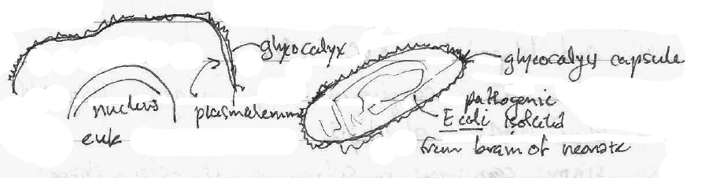
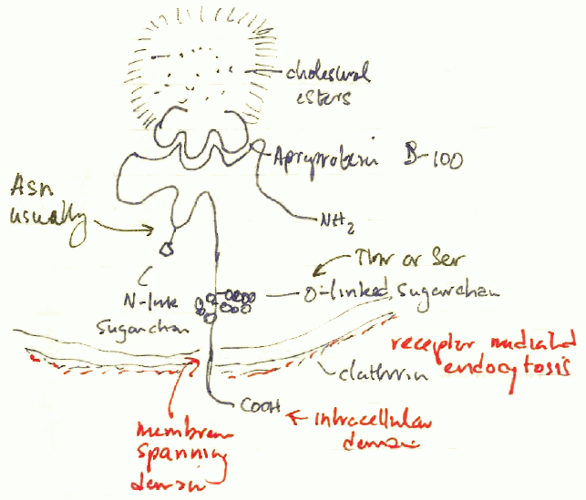
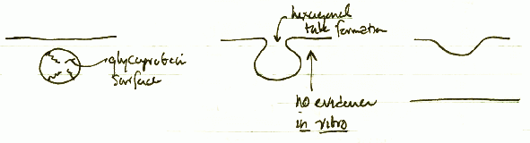
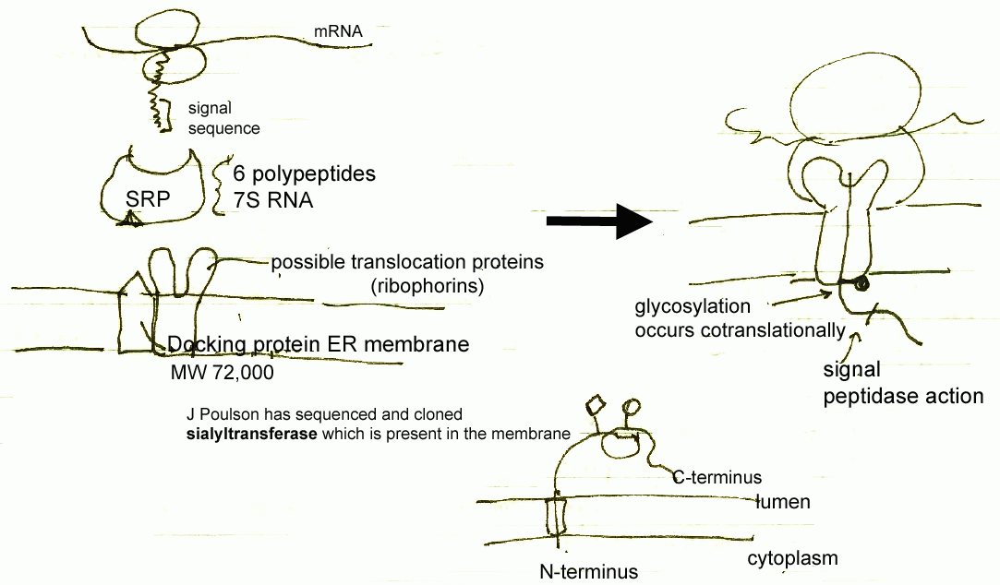
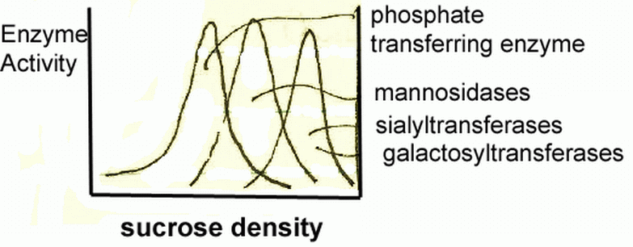
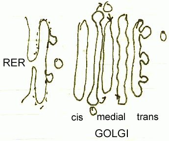

Biochemistry 201D
Cellular Biochemistry
Lecture Notes
24 April 1987
Membrane glycoproteins mediate cell-to-cell interactions. A slide is presented showing an RBC encountering a lymphocyte. The lymphocytes shows tremendous number of microvilli and filopodia, while the RBC is relatively smooth. The contact was mediated by coating the RBC with complement, which have glycoconjugates that enabled the interaction. Glycoconjugates include glycoproteins, GAGs, and glycolipids.
When RBCs pass through sinous capillaries in the spleen, they must deform their shape, and this deformation process is mediated the glycoprotein glycophorin. Acanthocytes in the spleen have a spiked, mace-lke appearance.
Malignant melanoma in humans has always been metastatic. A slide is shown in which melanoma cells invade a monolayer of cultured endothelial cells. Such metastasis involved cell-cell recognition of surface glycoproteins and proteolytic degradation.
In cell division, an in vitro examination of Chinese hamster ovary cells in culture shows a rounded appearance of the cell in mitosis. Other cells in G1 or G0 show a bipolar, spindle shape.
With transformation, cell shapes of most cells are grossly altered, and this is likely due to glycoconjuages on the cell surface. The properties of transformation are:
social architecturelost; migrating ability
Immunoglobulins normally pick off normal flora if they are somewhere where they are not supposed to be. An E coli bacterium with polysialic acid molecules can mimic neonatal neuronal cell adhesion molecules and this enabled its pathogenicity (see figure).

Exopolysaccharides form cell skeletons in many respects. The following are so:
 Model LDL receptor (see figure at right) sits on the surface of all cells and culls circulating LDL from the blood. Defects in the receptor may be involved in atherosclerosis. The receptor mechanism is classical signal transduction.
The oligosaccharide portion provides a great deal of structural diversity, its mass not correlated to any known function.
α1 glycoproteins have terminal sialic acid residues. When these terminal residues are removed, the protein itself is quickly removed (half-life in minutes) from circulation by the liver.
| Monomer Composition | Product | No. isomers | ||
|---|---|---|---|---|
| peptides | saccharides | |||
| X2 | dimer | 1 | 11 | |
| X3 | timer | 1 | 176 | |
| XYZ | trimer | 6 | 1056 | |
| each saccharide monomer can have 6 positions with 4 chiral carbons | ||||
29 April 1987
Certain antibiotics inhibit enzymes important in glycoprotein synthesis. Dolichol diphosphate (Dol-PP) needs to be converted to the monophosphate by a phosphatase that is inhibited by bacitracin. Bacitracin also inhibits the conversion of undecaprenyl diphosphate to the monophosphate.
Oligosaccharide processing involves movement of the coded glycoprotein synthesis from rough endoplasmic reticulum to the Golgi, and the Golgi is compartmentalized in cis, medial, and trans regions. Movement or transport appeears to receptor-mediated, on proteins which themselves are sialylated glycoproteins.
High-mannose sugars on proteins are diverted to the Golgi. In the cis Golgi sugars are phosphorylated and detectable by lysosomal receptors.
UDP-GlcNAc + mannose-oligo-protein → UMP + GlcNAc-P-mannose-oligo-protein
GlcNAc-P-mannose-oligo-protein + H2O → P-mannose-oligo-protein
+ GlcNAc
In the handout there are reactions 2 and 3 show the oligosaccharide transferase
(exoglycosidases), and these early pruning reactions show little substrate
specificity (they are promiscuous
enzymes). An enzyme isolated in
thyroid gland has an endo α1→2 mannosidase activity which
generates a Glc-Man disaccharide. Processing enzymes before did not show
pruning of Glc and Man together.
Vesicular Transport Apparatus. In the rough ER (RER) there is protein synthesis and then glycosylation. This is followed by vesicularization where processing is by a mechanism of clathrin-type endocytosis. The vesicle fuses to cis Golgi, reforms, then fuses to medial Golgi, then reforms, then proceeds to the trans Golgi. Another vesicle emerges from the trans Golgi to produce any number of mature organelles: lysosome, secretory granule, or an exocytic vesicle to the plasma membrane.
Electron micrographs show a budding
in the Golgi cisternae and this is
both a budding off
and a vesicle fusion
. Studies of envelope
virus infection such as vesicular stomatitis virus (VSV) which exploit the use
of host cell membrane in their virions show that glycoproteins can be processed
in 15 min and in 30-40 min the virus is ready for budding from the membrane.

Fusion. Page 5 of the handout shows what is involved in the lumen of the vesicle. The extracellular orientation of a glycoprotein in vesicle transport actually is located within the lumen of a transport vesicle. In fusion with the surface there is formation of a hexagonal tube which cannot be reproduced through in vitro studies (see figure).
It was Blobel and co-workers who found that glycoproteins fated to be on the plasma membrane or to be secreted should have signal sequences within the polypeptide. These signal sequences are about 10-15 aa long and do their signaling during synthesis (translation). The figure below shows how signal recognition peptides (SRPs) enable the nascent polypeptide to combine with translocating proteins and docking protein that probably brings in a peptidase that cleaves the signal peptide (see figure below). Proteins to be sialylated are also sialylated there.

In experiments to determine the vesicularization required, compounds are (radio)labeled which are known to move from teh ER to the Golgi, or if not known to move, they are known to be present. As saccharides are added, the vesicle density actually increases, and so these vesicles can be separated using density methods. Ehzyme activities associated with density-separated fractions can be ascertained (see plot below). Thus in the earliest (low density fractions) phases, there are phosphate-transferring activities. Later mannosidases are used to remove high-mannose glycosylations. Then in the final processing are sialyltransferases and galactosyltransferases.

Glycosylation events. UDP-glucose and GDP-mannose are activated nucleotides required for building the oligosaccharide. A question occurs as to how additional glucosylations and mannosylations occur if the initial glycosylation occurs lumenally. The proposed mechanism is that a dolichol intermediate is formed, and the dolichol glycoform is flipped cytoplasmically to lumenal side.
1 May 1987
